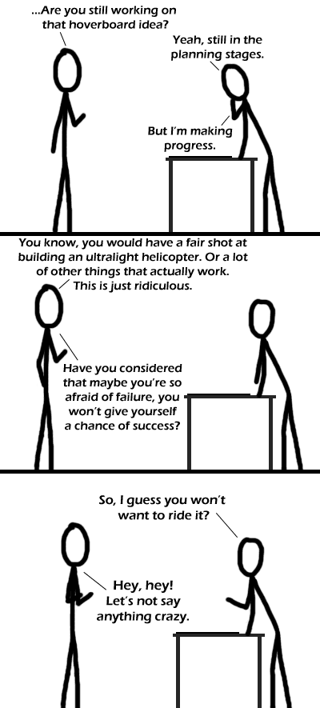

Comic JK 218
When I Feel Like It
⇤
<
?
>
⇥

⇤
<
?
>
⇥
Forum
.
RSS
.
Digg
.
Facebook
.
Reddit
.
Twitter
.
Stumbleupon
Herpaderpa engines would help... Hey! Everyone knows you use superconducting spaghetti to make a hoverboard. >Unfortunately that's just when you have the other half of the inclosed instruction book in place. Unrestrained levitation mechanisms haven't been invented yet - hovercraft are the closest we've gotten and they need a skirt to contain their punanee (I'm taking a slight logical leap in the assumption that what I saw on TV is real). Mythbusters created miniature ones from leafblowers with marginal success in one of the early seasons, if you're interested. If you give yourself a better job than they did, you could probably come up with a workable mini-hovercraft. >>Use Magnets. The blade sunk into the blue throat and worked its way up to Dash’s chin. Coming back down, Pinkie’s scalpel then circled Dash’s neck. The last thing Rainbow Dash felt was her skin being cut away from her skull, and the metal of the blade scraping her teeth. Then she was gone. Or not.